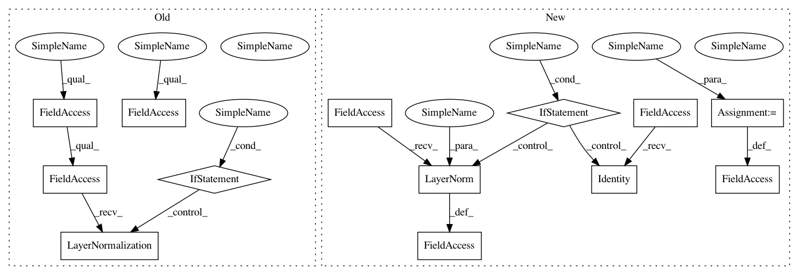

b7bdc5b940af98a8014e9e2fc63d5e24cc3b013b,layers/eight_mile/tf/layers.py,TransformerEncoderStack,__init__,#TransformerEncoderStack#Any#Any#Any#Any#Any#Any#Any#Any#Any#Any#Any#Any#Any#Any#,2609
Before Change
super().__init__(name=name)
self.encoders = []
self.ln = tf.identity if layer_norms_after else tf.keras.layers.LayerNormalization(epsilon=layer_norm_eps)
if not is_sequence(rpr_k):
rpr_k = [rpr_k] * layers
After Change
return attended
def _attention(self, query_t, keys_bth, keys_mask):
pass
def _update(self, a, query_t, values_bth):
// a = B x T
// Want to apply over context, scaled by a
// (B x 1 x T) (B x T x H) = (B x 1 x H)
B, H = get_shape_as_list(a)
a = tf.reshape(a, [B, 1, H])
In pattern: SUPERPATTERN
Frequency: 3
Non-data size: 13
Instances
Project Name: dpressel/mead-baseline
Commit Name: b7bdc5b940af98a8014e9e2fc63d5e24cc3b013b
Time: 2020-08-16
Author: wliu@interactions.com
File Name: layers/eight_mile/tf/layers.py
Class Name: TransformerEncoderStack
Method Name: __init__
Project Name: dpressel/mead-baseline
Commit Name: 4d75253f817053abf2eb7bd909b5d0389b82814d
Time: 2021-03-02
Author: dpressel@gmail.com
File Name: layers/eight_mile/tf/layers.py
Class Name: TransformerEncoderStack
Method Name: __init__
Project Name: dpressel/mead-baseline
Commit Name: b97fe6310224efd2e7449e53d067f9e3adc178a5
Time: 2020-07-21
Author: wliu@interactions.com
File Name: layers/eight_mile/tf/layers.py
Class Name: TransformerEncoderStack
Method Name: __init__